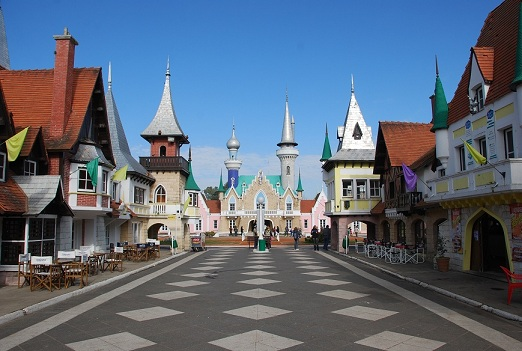
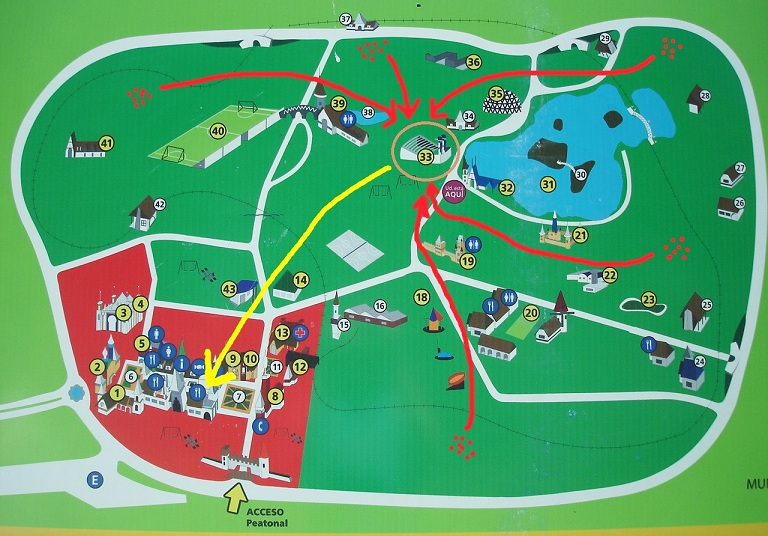

República de los niños

La
República de los niños es un parque temático
educativo que ocupa 53 hectáreas en Gonnet, ciudad de La Plata, a unos 60 km de
Buenos Aires. Fue creado en 1951 durante el gobierno de Perón con el fin de
“ayudar en la formación de los niños como ciudadanos”.
Recrea zonas rurales y urbanas con lugares de instituciones típicas de
una república, construidos a escala de niños de 10/11 años: casa de gobierno,
legislatura, policía, palacio de justicia, palacio de cultura, capilla (no podía
faltar).
Beto propuso a su grupo hacer un ejercicio
en ese lugar como primera experiencia intervencionista con el objetivo imaginario
de “tomar la ciudad”: modificar (lo más profundamente que se pudiera) el
paisaje de un domingo apacible y tradicional de paseo de miles de
niños acompañados por sus padres y otros adultos por el predio. El Grupo Madre ayudaría
ese día. Cada miembro del grupo debía acudir al Parque tal domingo por la mañana
acompañado de 4 ó 5 invitados, munidos todos con vianda para el almuerzo. Se
organizarían 5 grupos de actores con sus invitados, y cada grupo ocuparía un
espacio en la periferia del Parque para realizar juegos y bloques teatrales con
improvisación para que participaran los invitados. Habría mensajeros que coordinarían
las acciones intercomunicando los grupos con Beto. Luego de almorzar los grupos debían concentrarse en un punto para, juntos y a través de
juegos teatrales, copar el Centro Cívico (o sea, la “toma” se ideó para
llevarla a cabo lenta y gradualmente de la periferia hacia el centro).

Un hermoso domingo de
septiembre de 1978
por la mañana comenzaron a llegar titeanos al lugar, con pocos invitados (fue
muy difícil comprometer gente joven un domingo temprano a la mañana para
viajar 2 horas a la ciudad de los niños
para hacer algo muy raro). Los integrantes del Grupo de Beto que participaron
fueron Diana, Irene, Nelly, Vilma, Horacio, Félix, Adriana, Albertito, Frigor,
Batata, Negro Luis María, Nomi, Marina y Mariana. Los miembros del Grupo Madre
que acudieron fueron Chiari, Chacho, Ruth, Ricky, Raúl, Norberto, Cthulhu y
otros. Se formaron los grupos y se dispersaron por el
predio; hicieron juegos, bloques y almorzaron. Luego fueron confluyendo hacia
el anfiteatro (flechas rojas en el plano) y comenzaron a mezclarse, realizando
en el escenario bloques conocidos, de ensayos o montajes del TiT. Al ver
movimiento, empezó a entrar gente al anfiteatro y a sentarse en las gradas.
Cuando se juntó una cantidad suficiente, se les propuso a los presentes “trasladar la
escena”: había que llevarla a la ciudad, donde había miles de personas. Los
actores levantaron imaginariamente el piso del escenario y comenzaron a
moverlo, saliendo del anfiteatro en dirección al centro cívico, que
estaba a unos 300 ó 400 metros (flecha amarilla en el plano). La gente siguió
a los actores y algunos ayudaban con la mudanza; durante el trayecto los actores
les pedían a los transeúntes que junto a sus hijos ayudaran a trasladar la escena, y se
sumaron decenas de personas, algunas acompañando y otras participando
activamente; cada tanto alguien gritaba “¡Cuidado con tal cosa!” y todos
hacían movimientos para esquivar un obstáculo, siempre con los brazos en alto
sosteniendo el escenario imaginario; o alguien pedía ayuda porque en esa zona la escena era más
pesada. Al llegar al centro cívico ya eran cerca de 100 personas las que
participaban de la mudanza, con movimientos cada vez más exagerados y a los
gritos, lo que causó gran curiosidad en la gente que estaba paseando por las
calles; a una orden se tiró la escena sobre el piso y hubo momentos de algarabía.
Los actores (varios de ellos disfrazados) ya tenían la atención de mucha más
gente y organizaron juegos y canciones interactivas. El jolgorio duró un rato
largo, hasta que los actores, un poco desbordados y sin iniciativas, decidieron
dispersarse o dar por terminado, alrededor de las 5 ó 6 de la tarde.
La propuesta general fue interesante, pero
faltaron ideas concretas para ir más allá en los momentos álgidos. Para la
mayoría de los actores era su primera intervención (muchos hacía solo 2 ó 3
meses que se habían incorporado al TiT), y faltó una dirección experimentada
y fuerte (también era la primera experiencia de Beto como director).
Se rescata el tramo de “traslado de la
escena”, durante el cual se hizo participar a mucha gente en un juego
mentiroso divertido pero muy simbólico: sacar el teatro de su templo para
llevarlo a la vida, a la calle.